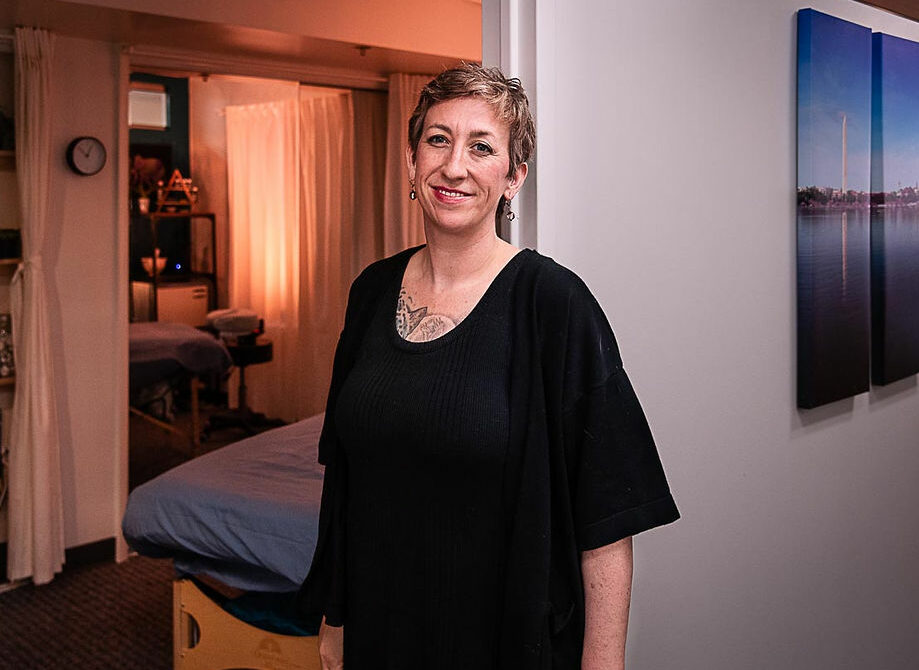

About Me
Graduate of Finger Lakes School of Massage (FLSM) 2007
DC License #MT2181
I relocated to DC from Ithaca, NY, home to my alma mater Finger Lakes School of Massage (FLSM) The demand for quality bodywork here has inspired me to deepen my study and practice in medical Thai massage and perinatal massage. Studying pregnancy massage with Carol Osbourne and moving through pregnancy and into motherhood myself has deepened my passion to work with a diverse population of clients supporting families before, during, and after pregnancy. Delving into Thai element theory with Nephyr Jacobson and studying Thai acupressure with Noam Tyroler have created a depth to my understanding of treatment options for massage therapy using variety of techniques unique to the country of Thailand. Over the past 15 years I have been studying and practicing Thai massage. The techniques and theory have inspired me to pursue a variety of modalities to help people alleviate pain and assimilate relaxation into their daily lives. I am constantly learning and trying new things in an effort to give my clients the best experience possible. I use comprehensive listening skills to assess appropriate treatments and execute therapeutic massage. Integrating acceptance, non judgement, and compassion into each session has become inherent in my work.
Special Interests: Injury rehabilitation, Thai Acupressure for orthopedic disorders, Thai medical theory, postnatal care, perinatal yoga.
Modalities Practiced: Custom/Integrative Massage for pain relief & relaxation, Thai massage & acupressure, Pre/Postnatal Massage, Myofascial release, Swedish, Deep Tissue, Reiki
